PASS — 10구역 300마리 · 6m/s 스프린트 · 평균 59.80FPS / p95 16.67ms.
BlueStacks 900×1600 · 실제 휴대폰 아님 · 캐릭터 1.30m / 슬라임 0.62m 기준. 모든 사진은 실제 앱 캡처입니다.
언덕·다리·마을 앞의 실제 카메라와 캐릭터 비율을 비교할 수 있습니다. 세부 PASS/FAIL 및 제한은 함께 제공된 작업 기록을 확인하세요.
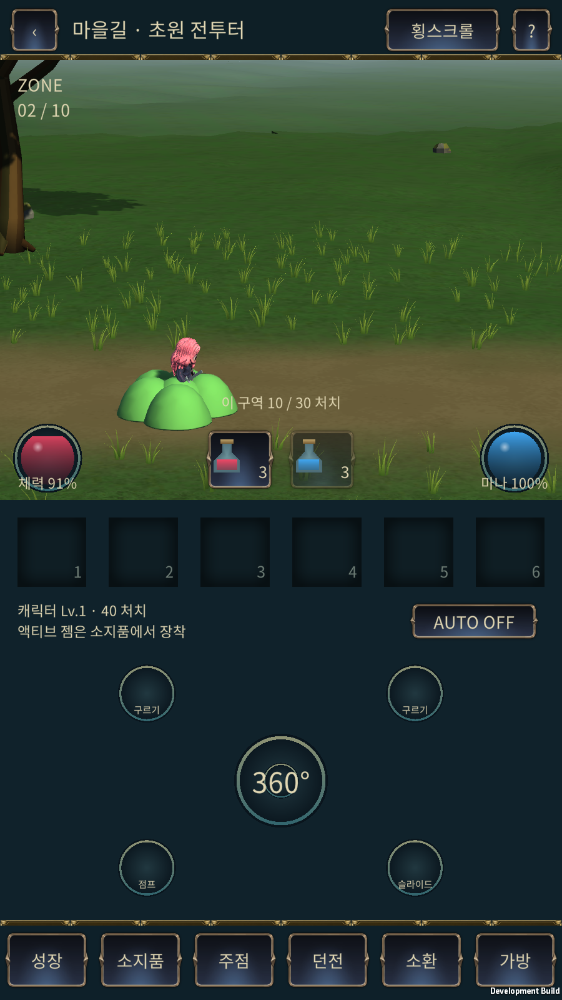
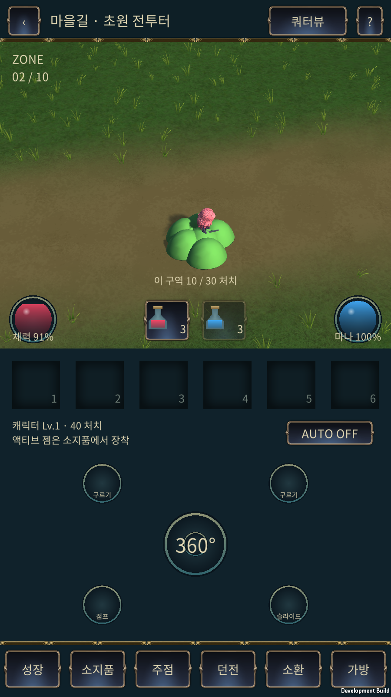
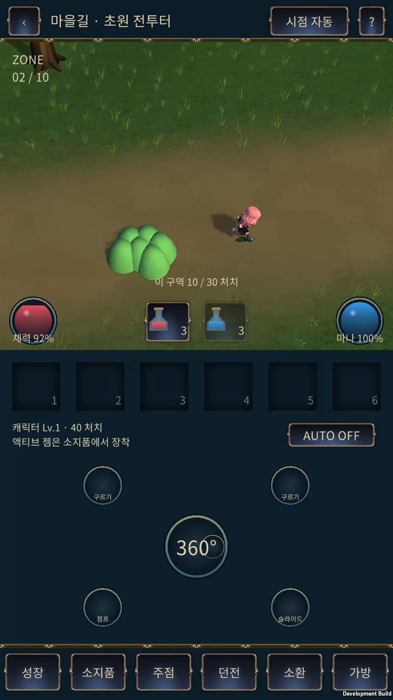
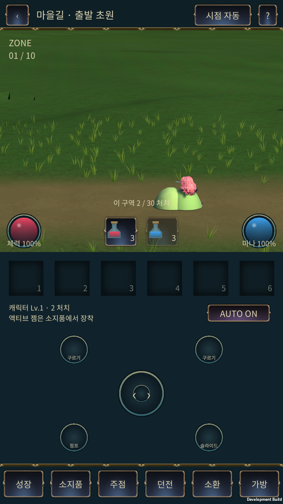
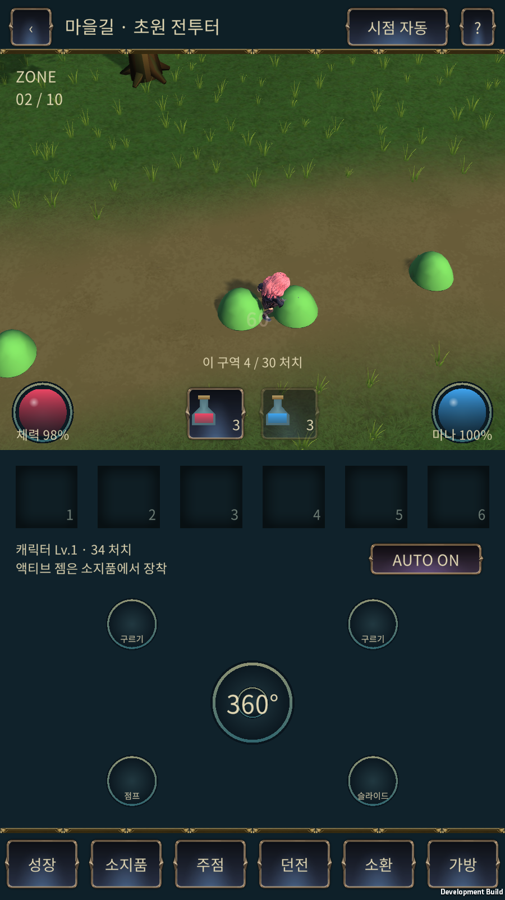
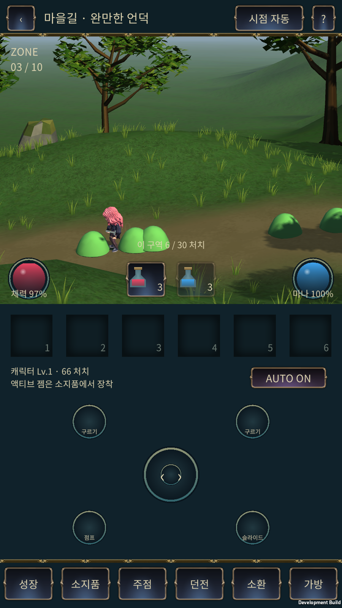
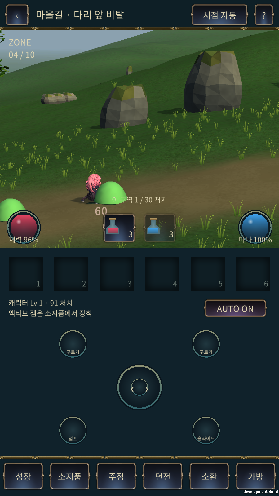
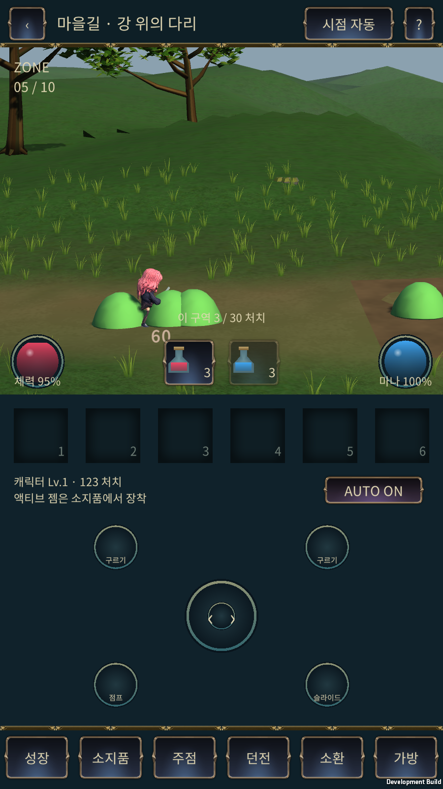
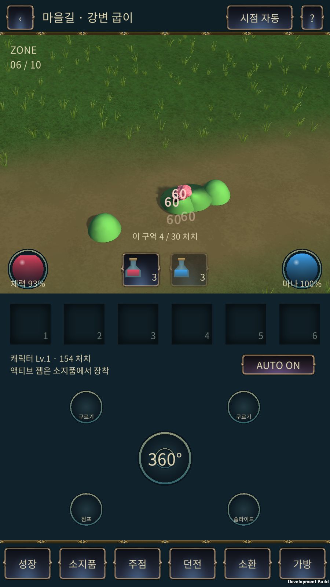
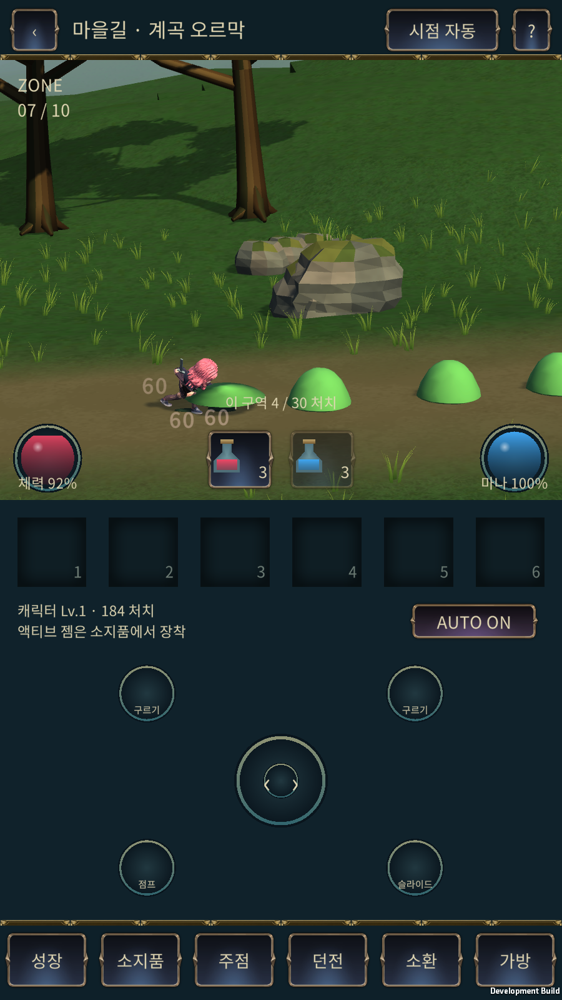
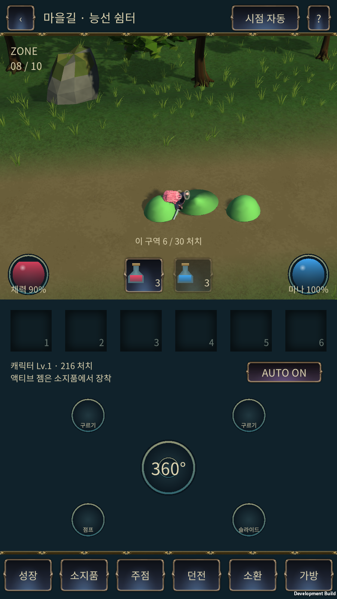
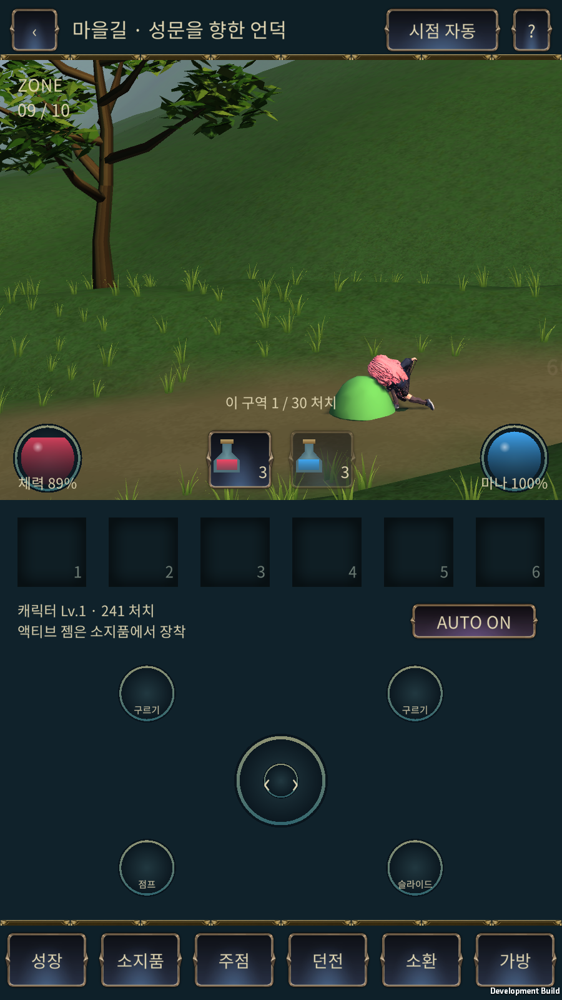
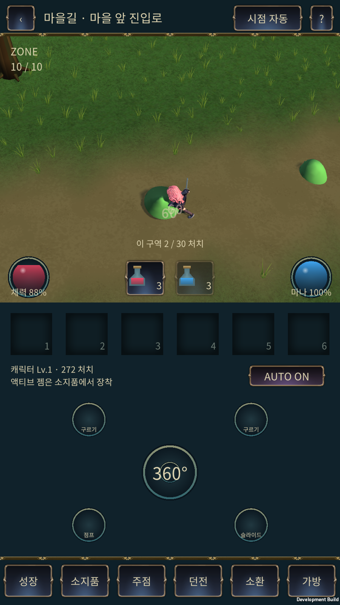